A continuación encontrarás una selección de proyectos y apps creados con Processing para Android, ordenados alfabéticamente. Puedes sugerir un nuevo proyecto para incluir en esta lista escribiendo a android@processing.org.
APDE
Por William Smith
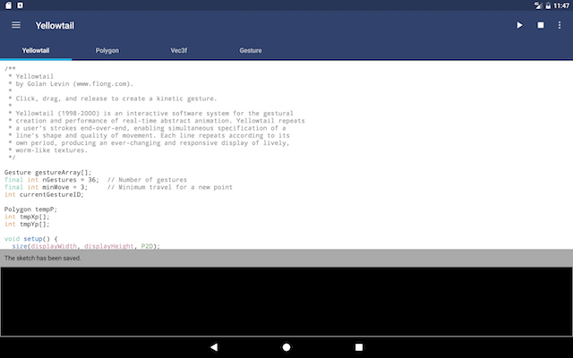
APDE (Android Processing Development Environment) es un entorno de desarrollo integrado para crear bosquejos de Processing en tu teléfono o tableta. APDE permite transitar el ciclo completo de edición, compilación, y ejecución. No necesitas una computadora de escritorio o laptop ni el SDK de Android para comenzar a programar en el camino.
Enlaces: Google Play, código fuente
B-RU Receiving message
PorPor Bruno Ruchiga

Un juego corto acerca de un astronauta con poca batería y baja señal, buscando nuevos mensajes. Desarrollado durante el Global Game Jam 2018.
Enlaces: Google Play
Bug Rope
Por Evan Shellshear
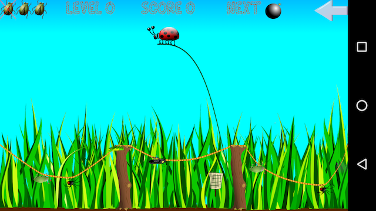
Un juego para niños donde el jugador es desafiado por una invasión de insectos.
Enlaces: Google Play, web
Cardinality of Singular Place
Por Penelope Umbrico

Cardinality of Singular Place utiliza las coordenadas del GPS para generar un paisaje abstracto único dependiendo de la geolocalización.
Enlaces: Google Play
DISOBEDIENCE
Por Jean-Michel Rolland

Caja musical generativa reproducida en vivo por tu dispositivo.
Enlaces: Google Play, web
Elements
Por LIA

Elements es una app entretenida que te permite crear patrones intricados, al combinar creación de formas con controles de rotación y movimiento.
Enlaces: Google Play, página de Experimentos Android, código fuente
Fuzo - Time Zone Converter
Por rich.gg

Es una app de conversión de horarios con una interfaze 3D.
Enlaces: Google Play, web
Game of Life HD
Por Eduardo Moriana

Implementación en GPU del autómata celular del Juego de la vida de Conway, y que incluye soporte de multitoque.
Enlaces: Google Play, web
Generative Music Patterns
Por Jean-Michel Rolland

Colección de patrones musicales generativos creada durante una residencia web de Solitude y ZKM.
Enlaces: Google Play, web
Kōan
Por rich.gg

Kōan es un boceto, definitivamente un plan. Y el arquitecto quiere que lo destruyas. Delicada, metódicamente, de la manera que tocarías las teclas de un piano si estuvieras en calma y soledad.
Enlaces: Google Play
La Révolution des Ténèbres
Por Fran Lejeune y Jean-Michel Rolland

La Révolution des Ténèbres es un libro multimedia interactivo de ciencia ficción, basado de manera libre en la vida del pintor Caravaggio.
Enlaces: Google Play, documentación en vídeo
Lantern
Por Nord Projects
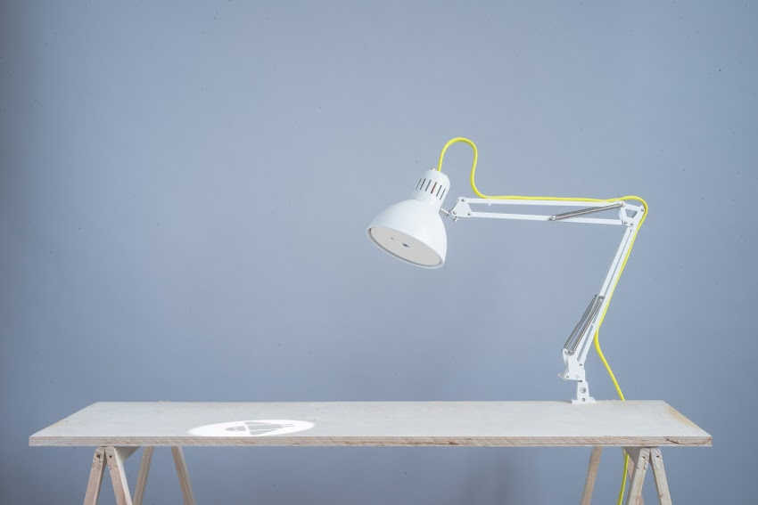
Lantern convierte cualquier superficie en AR utilizando un Raspberry Pi, un proyector laser, and Android Things.
Enlaces: Android Experiments page, código fuente
LEDsign
Por Kevin Kowalski
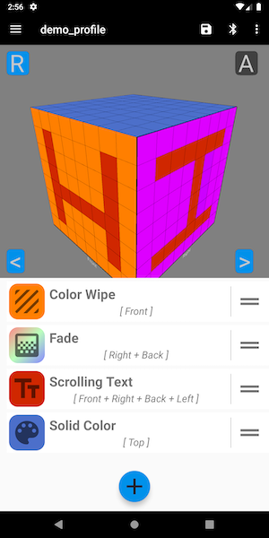
LEDsign proporciona una vista previa en vivo 3D de los efectos que tu puedes crear y personalizar dentro de la app. Además puedes cargar tu perfil en un circuito Arduino a través de Bluetooth para ver los efectos en el espacio físico.
Enlaces: project page, source code
Look up
Por Ekene Ijeoma
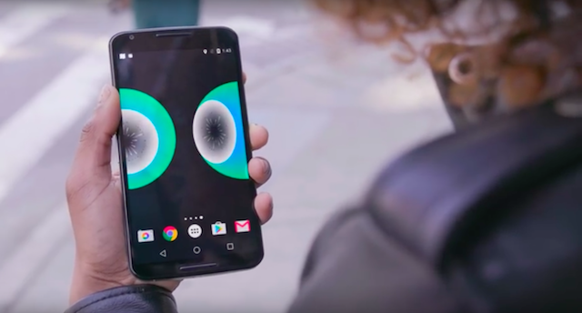
Look Up es una app de arte público participativo que motiva a los neoyorquinos a dejar de mirar sus teléfonos para concentrarse en las intersecciones en las calles y así aceptar la diversidad y serendipidad de la ciudad.
Enlaces: Google Play, página de Experimentos Android, código fuente
Material Life
Por Juanky Soriano

Material Life es el primer simulador del Juego de la Vida que recurre a las prácticas de Diseño Material en nuestros dispositivos Android. Utiliza para el dibujo Rainbow, un fork del modo Android.
Enlaces: Google Play, página de Experimentos Android, código fuente
MusicBox3D
Por Bérenger Recoules
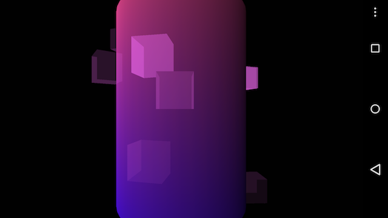
Simulación de una caja musical en la que cada vez que un cubo ejecuta una vuelta completa emite una nota.
Enlaces: Google Play, web
Octagon
Por Tailor & Wayne
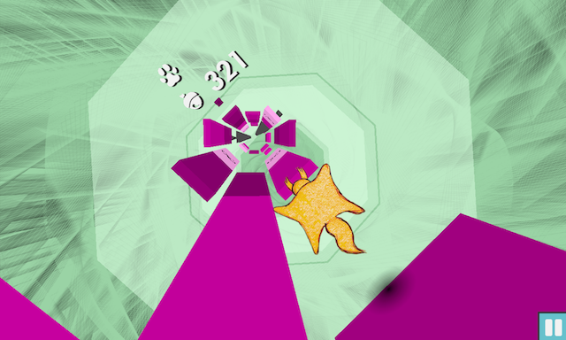
En este juego, gira to dispositivo para controlar los movimientos de la ardilla voladora dentro de un túnel octagonal en 360º mientras esquivas los obstáculos.
Enlaces: Google Play, web
Orbit Simulator
Por Tailor & Wayne
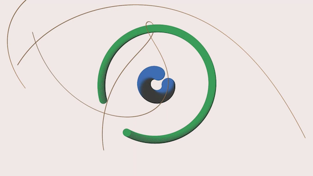
Reproduce la Ley de la Gravedad con tus dedos y el acelerómetro, y genera patrones de asteroides en movimiento.
Enlaces: Google Play, web
Origami Pixels
Por Kelley van Evert
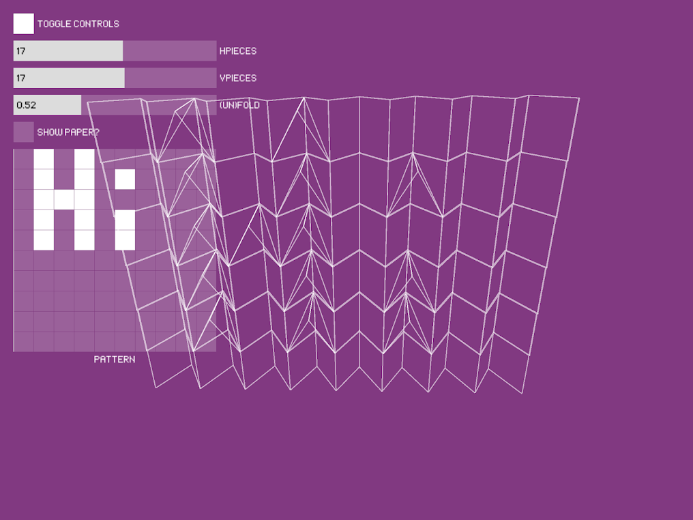
Transforma patrones 2D en objetos 3D.
Enlaces: Google Play, web
Pflow
Por Gabriel Weymouth
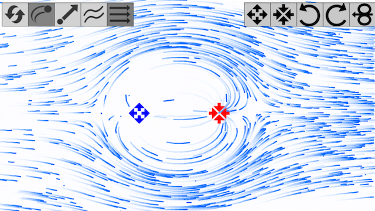
Visualization interactiva de simulación de fluidos.
Enlaces: Google Play, web
Phase Pendulum
Por Bérenger Recoules
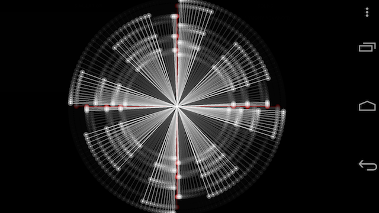
Sintetizador audio-visual basado en movimiento harmónico.
Enlaces: Google Play, web
Springs
Por Bérenger Recoules

Este app es un instrumento músico multitoque único que genera sonidos drone.
Enlaces: Google Play, código fuente, web
Running Tree
Por Andres Colubri
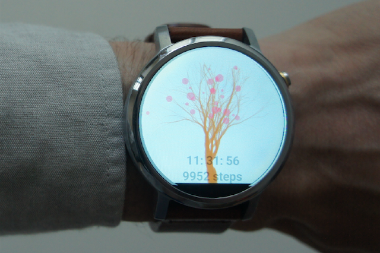
A watch face that grows a tree as the step count increases. The tree blooms when the count approaches 10,000 steps.
Enlaces: Google Play, código fuente
Survive the Minotaur's labyrinth
Por el Wrath Of The Platypi
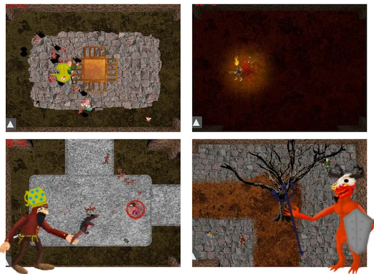
Juego de aventuras con trampas, armas, mágia, monstruos, zombies & aliados.
Enlaces: Google Play, página en Facebook
Swarmpaint
Por Josh Giesbrecht

Un app de dibujo generativo para dispositivos Android. Las líneas son creadas por partículas que reaccionan a los toques en maneras configurables (y generalmente raras).
Enlaces: Google Play, web
Tumbler Shooter
Por Camaris

Juego experimental de puntería.
Enlaces: Google Play
VR Audioscape
Por Sara Di Bartolomeo

VR Audioscape es una aplicación VR que te permite recorrer un paisaje procedural generado de acuerdo a la música. Reproduce una canción desde cualquier app en tu teléfono, y ejecuta este app: la utilizará automáticamente como punto de partida para los gráficos.
Enlaces: Google Play, código fuente
VR Draw
Por Andres Colubri
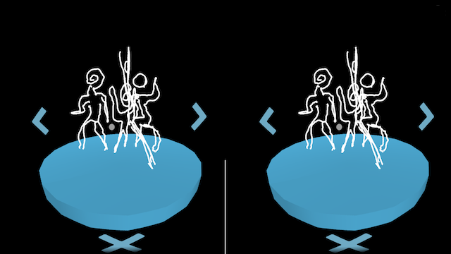
Esta app de VR para visores Cardboard o Daydream permite a los usuarios crear dibujos en VR usando la mirada, y luego volar a través de ellos.
Enlaces: Google Play, código fuente